Префектура Окинава · Наха · рынок
Рынок Макиси в Нахе: окинавская кухня после обновления
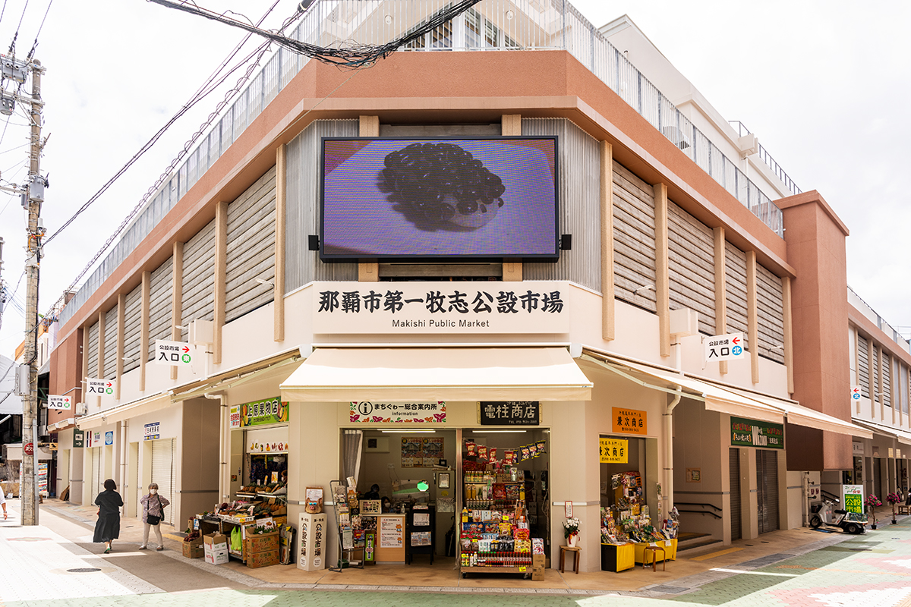
Первый общественный рынок Макиси в Нахе называют кухней Окинавы. В марте 2023 года, после четырёх лет перестройки, он вернулся на своё старое место, и вместе с ним вернулись торг, лавки с полувековой историей и обычай готовить наверху то, что купил внизу.
История
Рынок, который подняли матери
Рынок Макиси перестраивали около четырёх лет, и в марте 2023 года он открылся снова. Для жителей Нахи это был не просто новый торговый центр: рынок, ставший символом послевоенного возрождения, вернулся туда же, где стоял всегда. Многие в тот день плакали и повторяли: «С возвращением, рынок!»
До войны деловой центр Нахи находился в районе нынешней станции Асахибаси монорельса Юи-рэйл: там стояли мэрия и городской рынок. Воздушный налёт 10 октября превратил город в пепелище, а после войны район порта Наха перешёл под управление американских военных.
Люди собрались там, где разрушений было меньше: в Цубое, квартале гончаров, и в соседнем районе Кайнан. Появился чёрный рынок, и городские власти, заботясь о порядке и гигиене, решили построить общественный рынок рядом, в Макиси, на пустовавшей заболоченной земле. Война отняла у Нахи всё, вплоть до домашней утвари. В Цубое снова стали обжигать «макаи», миски для риса, и дым гончарных печей, как вспоминают, поднимался над городом словно сигнальный огонь возрождения.
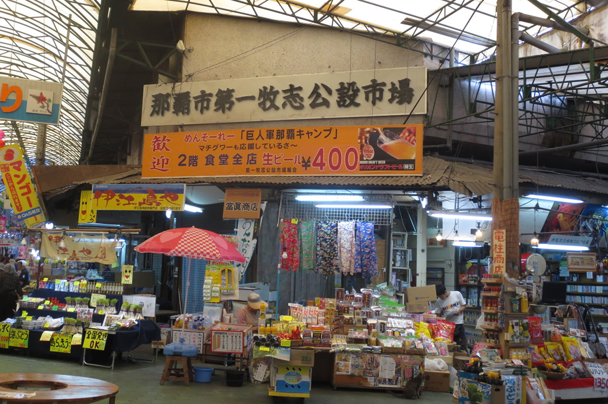
На «матигва», как здесь называют рынок, можно было заработать на жизнь одними руками: купить товар и перепродать его. Это было место «анма», матерей, которые в бедности растили детей. Их история продолжается и в новом здании.
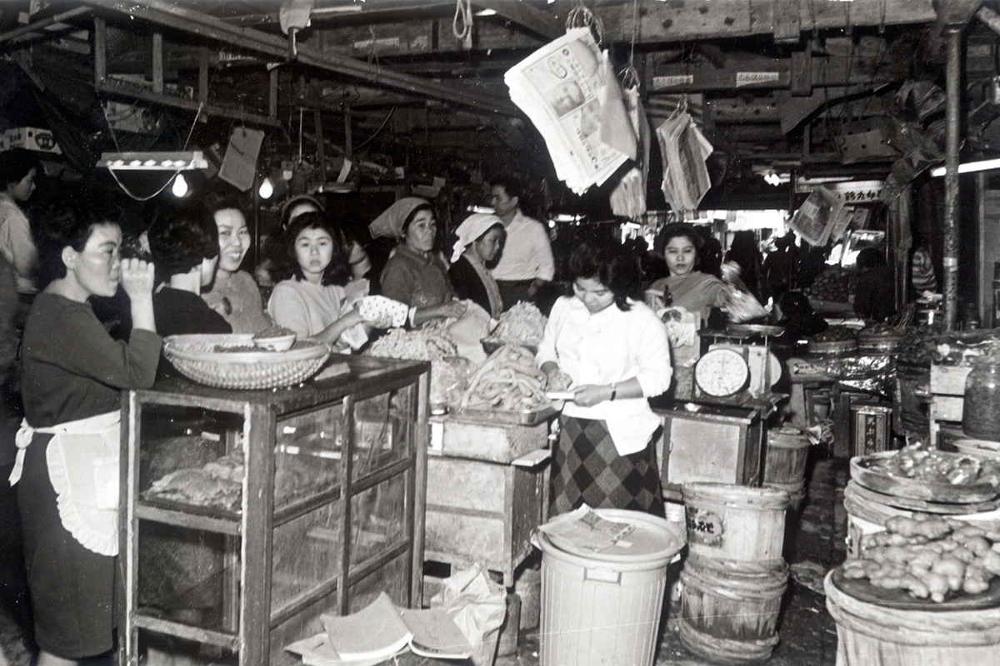
Рынок открылся в 1950 году с мясным и рыбным отделами, через год к ним добавились отделы хозяйственных товаров и одежды. В 1969 году появился Второй общественный рынок, и прежний стал называться Первым. В 1972 году, когда Окинава вернулась в состав Японии и стала префектурой, рынок получил новое здание. Второй рынок закрылся в 2001 году, а на его месте в 2005 году открылась площадь «Нигиваи хироба». В 2019 году Первый рынок переехал во временное здание на месте этой площади, в 2022 году закрылись отделы хозяйственных товаров и одежды, а в 2023 году рынок вернулся на прежнее место.
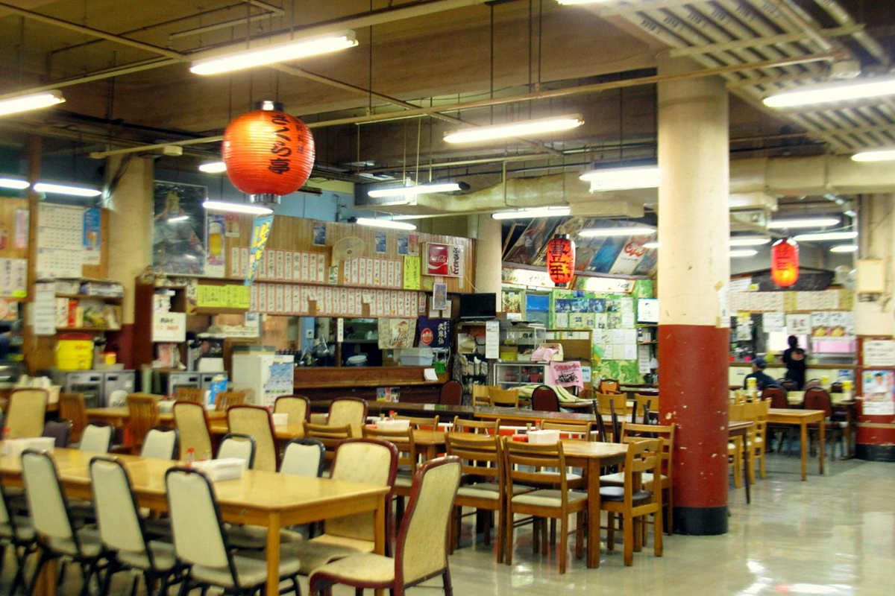
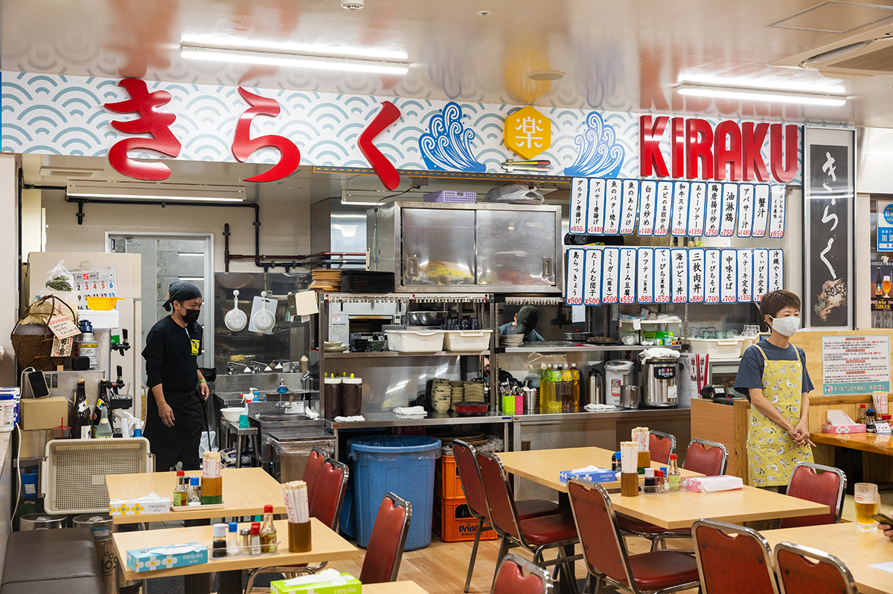
За четыре года перестройки округа изменилась: соседние улицы стали местом дневных посиделок, с барами формата «сэнбэро», где за тысячу иен можно выпить и закусить. Пока шла стройка, рынок работал по соседству, на месте бывшего Второго рынка.
«Главное на рынке Макиси это "аитай-ури", торг: цену и количество продавец и покупатель решают между собой. Со стороны видно только куплю-продажу, но на самом деле здесь обмениваются отношениями между людьми. Лавки и покупатели знают друг друга десятилетиями. Мы дошли до сегодняшнего дня потому, что не забывали про "сибун", маленькую добавку сверху в знак благодарности»
председатель союза торговцев рынка
Этажи
Что где находится
Окинавцы обычно покупают продукты в ближайшем супермаркете, но к Новому году, к празднику Бон по лунному календарю, к весеннему поминовению предков и другим семейным праздникам едут на рынок к своим давним продавцам: за большим количеством продуктов и за кацуобуси для бульона.
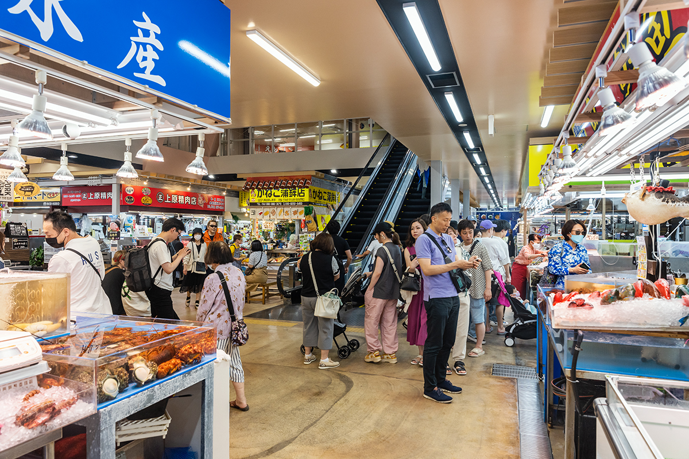
Первый этаж повторяет планировку старого рынка. Внутри мясные и рыбные лавки, лавки с закусками и полуфабрикатами, а снаружи по периметру работают небольшие лавочки «сотокома». По словам председателя союза торговцев, при перестройке старались, чтобы лица продавцов были хорошо видны покупателю. Местные жители и туристы, которые приезжают не в первый раз, часто говорят, что с облегчением нашли здесь прежнюю атмосферу торга. У входа устроено место для фотографий на фоне рынка.
На втором этаже находятся столовые: окинавская домашняя и рюкюская кухня, соки из тропических фруктов, сладости. Третий этаж появился только при перестройке: там зал для мероприятий и кухня, где можно приготовить купленные продукты. В справочном бюро «Матигва» рассказывают о рынке и окрестностях, есть туалеты для людей с ограниченными возможностями, а в зоне столовых комната для кормления младенцев.
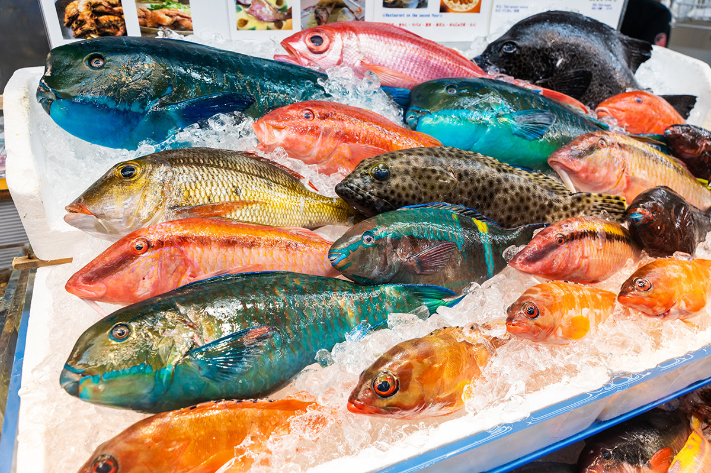
Моти-агэ
Купить внизу, съесть наверху
Самое известное развлечение рынка это «моти-агэ», буквально «поднять наверх». Устроено оно просто. Сначала выбираете продукты в мясной или рыбной лавке. Стоит попробовать то, что за пределами Окинавы встречается редко: местную говядину или свинину породы агу. Рыба зависит от погоды и сезона, лучше спросить, что сегодня самое свежее.
Затем вместе с продавцом решаете, как это приготовить. Мясо чаще всего заказывают стейком или сябу-сябу, рыбу сырой, в виде сашими, жареной с солью, тушёной в соли «маасу» или во фритюре. После оплаты продукты готовят в лавке под выбранный способ и относят в одну из столовых второго этажа, которые работают с этой лавкой. Остаётся сесть и ждать. За приготовление столовая берёт 500 иен за блюдо (цена 2023 года).
«Онага сэнгё»: рыба с чёрного рынка
Рыбную лавку «Онага сэнгё» основала бабушка нынешних хозяев ещё на чёрном рынке, и ей больше 80 лет. Здесь продают рыбу прибрежных окинавских вод, ракушки, кальмаров и осьминогов. Кроме постоянных местных покупателей сюда возвращается много туристов, и продавцы подскажут, как вкуснее всего есть здешнюю рыбу.
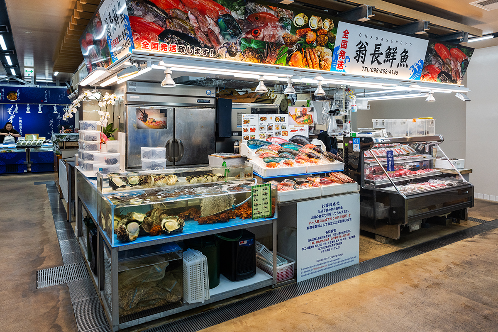
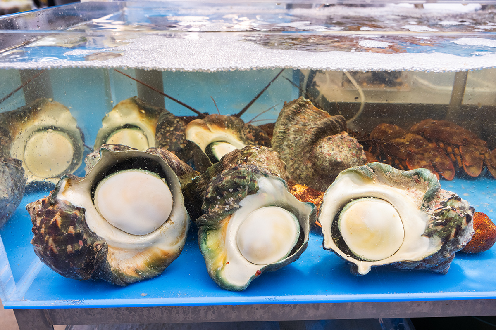
«Уэхара сэйнику-тэн»: говядина Исигаки, Мотобу и Ямасиро
Мясная лавка «Уэхара» работает с самого открытия старого Первого рынка. Здесь продают говядину префектуры, окинавскую свинину, откормленную на травах, и рюкюскую агу. На витрине лежат части свиной туши, привычные окинавской кухне, и собственные заготовки лавки: тушёная свиная грудинка рафутэ, свиные рёбрышки соки, свиные уши мимига, мисо со свиным салом, колбаски.
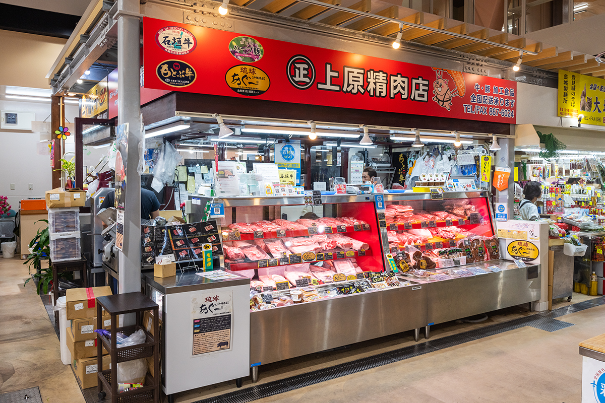
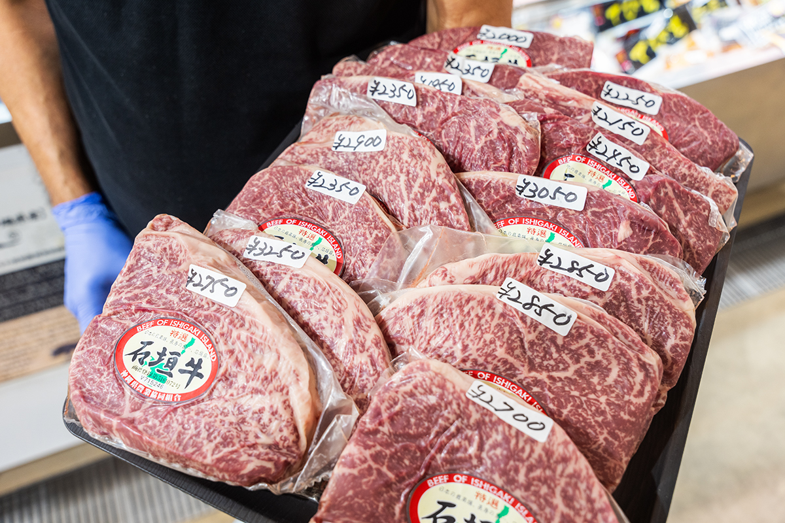
«Кираку»: всё окинавское
В столовой «Кираку» на втором этаже очень широкое меню: окинавская домашняя кухня, стейки, морепродукты, китайские блюда. Туристам, в том числе иностранным, больше всего нравится самое окинавское блюдо, гоя-тямпуру, жаркое с горькой тыквой. Если заказали продукты внизу, здесь остаётся только сесть и ждать.
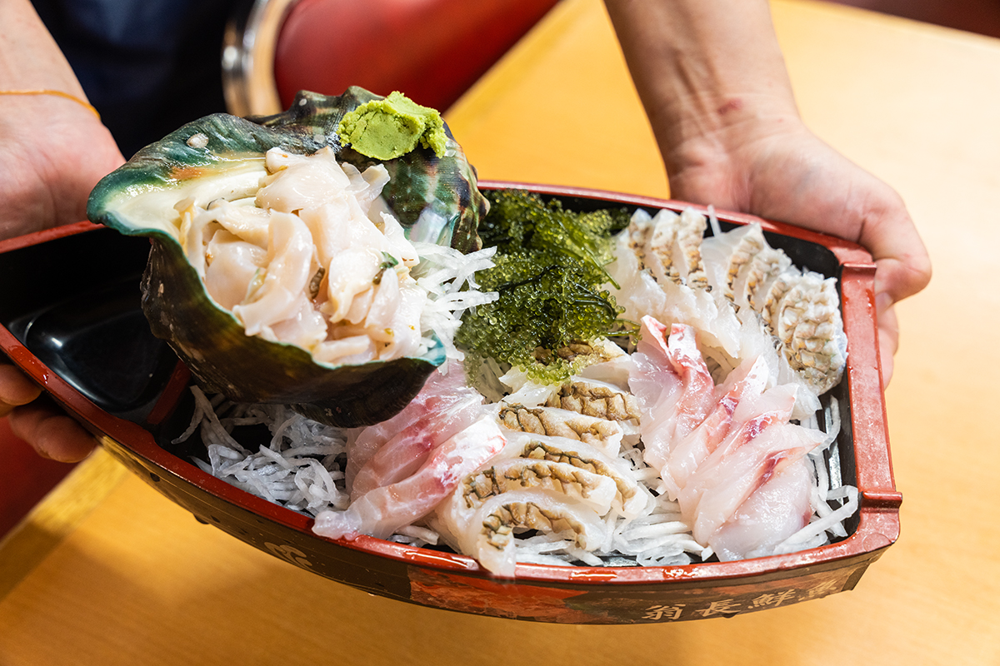
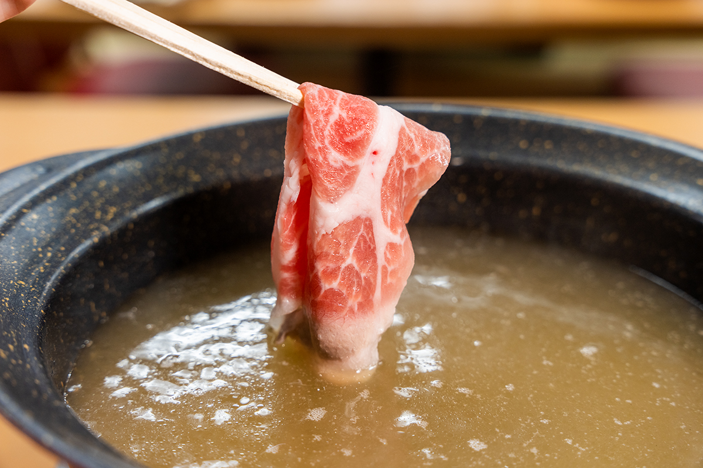
Лавки
Что увезти с рынка
«Канэко камабоко-тэн»: рыбная паста почти за сто лет
Лавка рыбной пасты стоит прямо у эскалатора на первом этаже. Её основала бабушка нынешних хозяев на чёрном рынке, возникшем после войны в районе Кайнан, и истории лавки около ста лет. Рецепт передавали по женской линии, и камабоко по этому рецепту каждый день выкладывают на прилавок свежими.
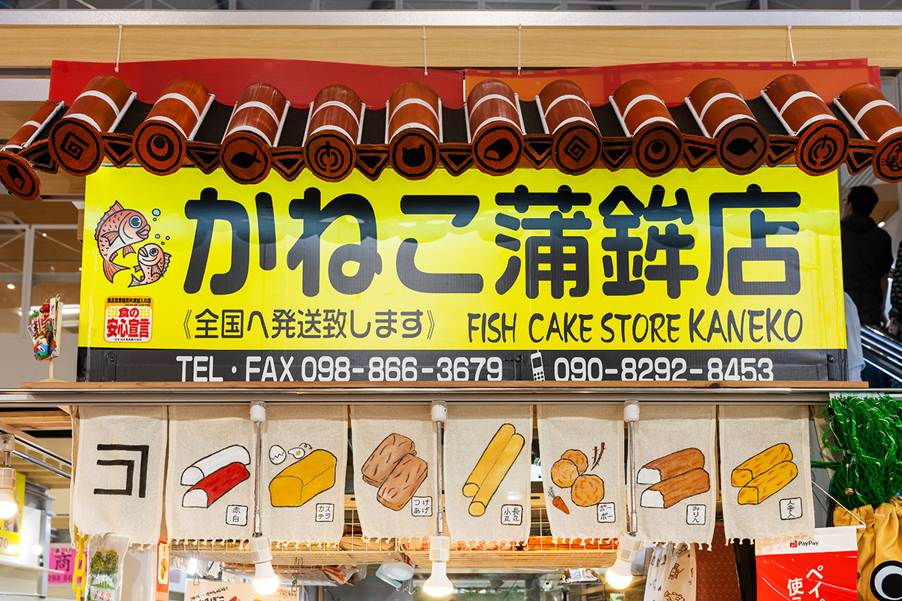
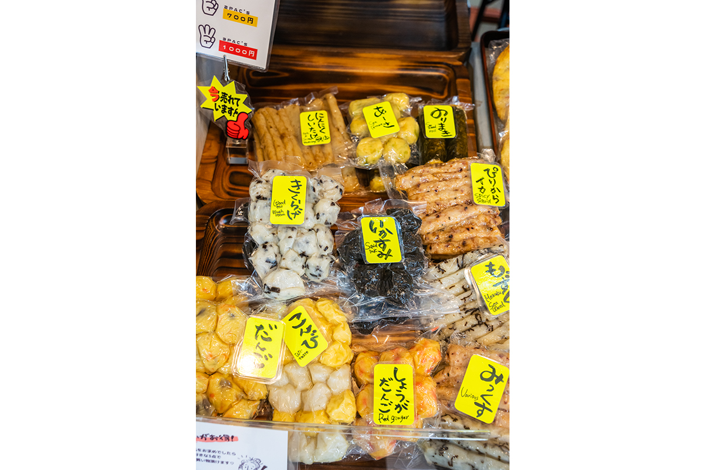
«Тэруя»: еда как лекарство
Лавку основала тётя нынешнего хозяина 70 лет назад. Здесь продавали хозяйственные мелочи, чай и продукты, и для рынка это был своего рода магазин у дома. На Окинаве говорят, что еда это «нутигусуй», лекарство для жизни. Самым ярким примером считается морская змея «ирабу», без которой не обходится окинавская лечебная кухня. Её продают и здесь, и многие берут её для бульона.
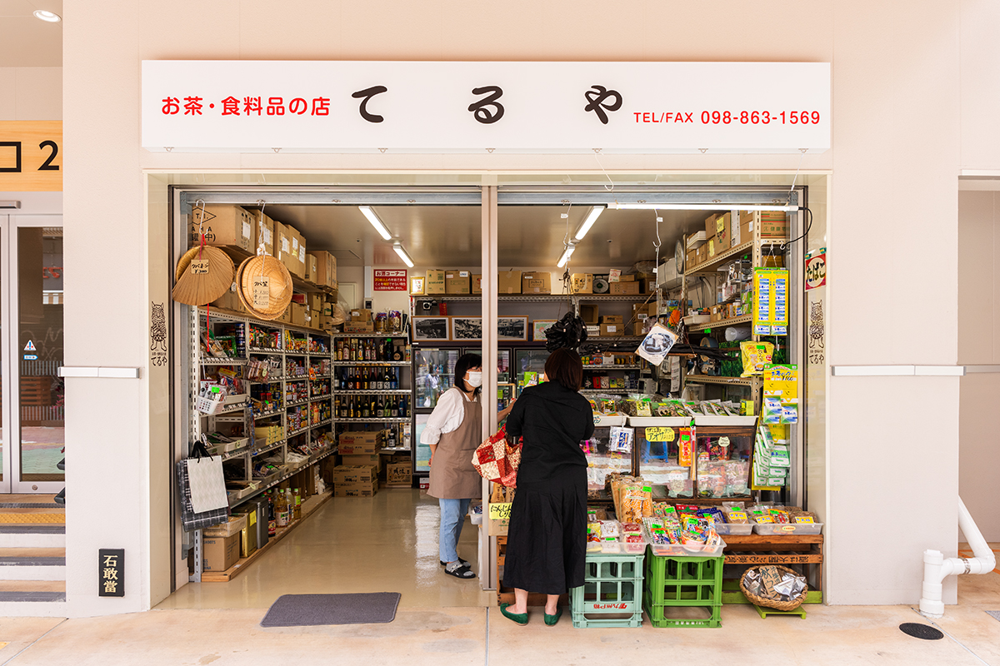
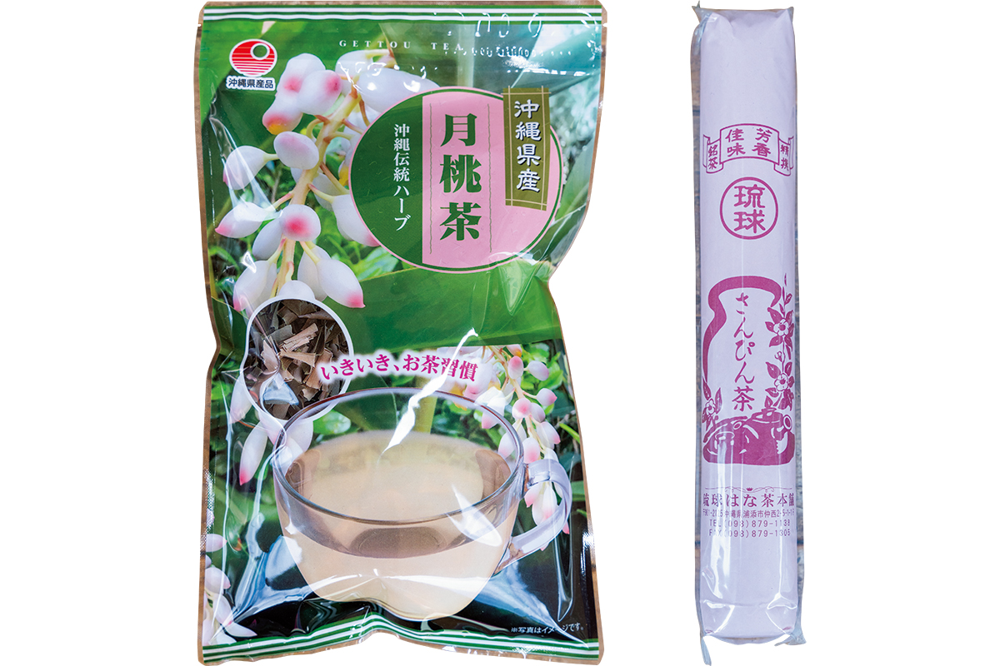
«Ямасиро конбу-я»: ламинария с Хоккайдо
Лавку ламинарии основала бабушка председателя союза торговцев рынка, сам он ведёт её в третьем поколении. Окинава одна из первых в Японии по потреблению ламинарии, хотя вся она привозная, с Хоккайдо. Считается, что во времена королевства Рюкю, когда шла оживлённая торговля с Китаем, китайских гостей угощали ламинарией, которая в Китае ценилась как изысканный продукт. Так и на Окинаве сложилась привычка её есть. Здесь продают ламинарию и «иричи», окинавское тушёное блюдо, без которых не обходится стол местной семьи.
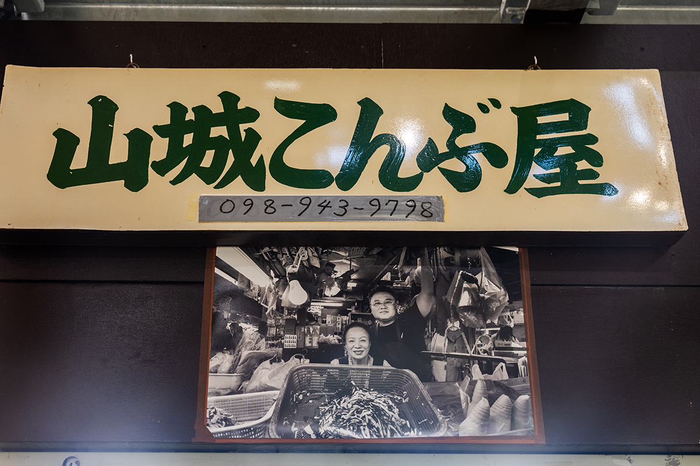
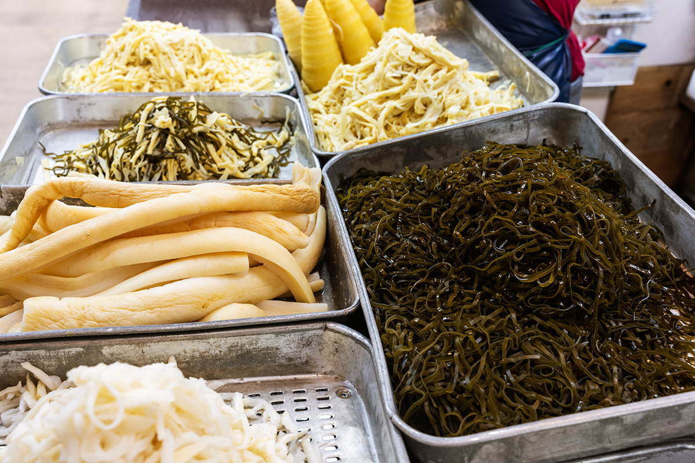
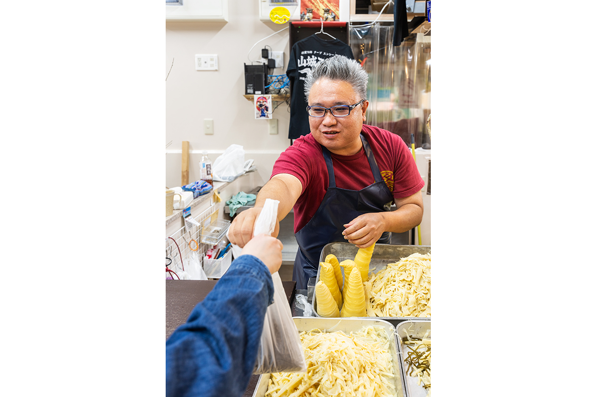
«Для гостей у нас есть места для фотографий и уголок, где можно попробовать себя на рынке. Сначала просто обойдите рынок по кругу и получите удовольствие»
председатель союза торговцев рынка
Первый общественный рынок Макиси
- Адрес
- префектура Окинава, Наха, Мацуо, 2-10-1
- Телефон
- +81 98-867-6560
- Часы работы
- 8:00–22:00 (столовые второго этажа: последний заказ в 20:00)
- Выходные
- четвёртое воскресенье месяца (в декабре без выходных), Новый год, Новый год и Бон по лунному календарю (в разных лавках по-разному)
Лавки и столовая рынка
- Телефон
- «Онага сэнгё» +81 98-862-4145; «Уэхара сэйнику-тэн» +81 98-867-6024; «Кираку» +81 98-868-8564; «Канэко камабоко-тэн» +81 98-866-3679; «Тэруя» +81 98-863-1569; «Ямасиро конбу-я» +81 90-9780-9043
Фото: G-KEN.